Executive Summary
 Apple Packaging
Apple Packaging
 Apple Packaging
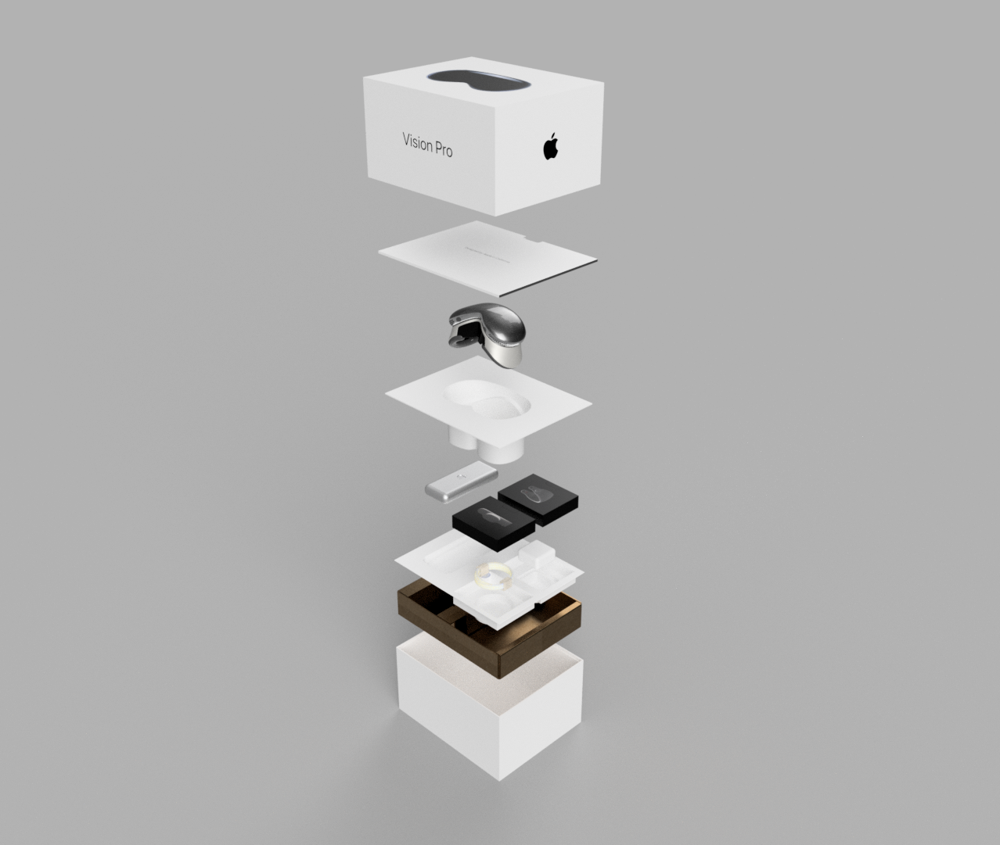
Apple Packaging
Apple Packaging
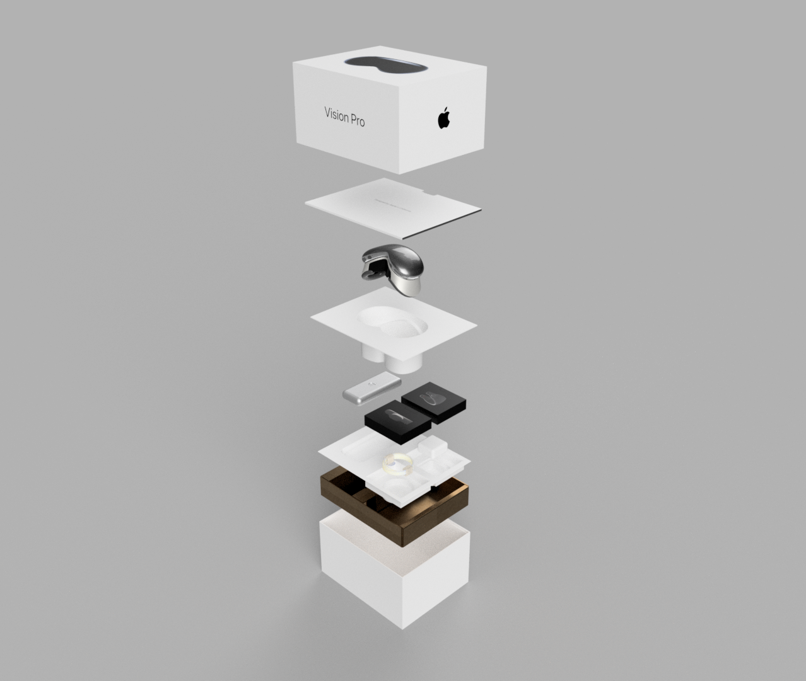
Apple Packaging
Inspiration
I have always loved the packaging that surrounds every apple product I have owned. Every detail is rigourously thought through as the experience of unboxing the product is like no other.
I recently graduated from U.C. Berkeley with a Master of Engineering degree in Mechanical Engineering with a concentration in Product Design. I thought this project would be a super cool way to put what I have learned to the test as the packaging surrounding this product has yet to be released yet. I have also challenged myself to complete this project in 7 days. I hope to take you along through my entire process through this document.
Day One
In starting this project, particularly due to the rigourous timeline, it is extremely important to establish some early concepts I want covered and requirements that I will aim to achieve in the seven. In doing so, it will prevent me from going on tangents that stray away from what I am trying to accomplish.
Project Goals
A well thought solution should have considered the following:
1. Unboxing experience: How will the user interact with it?
2. Critical dimensions and tolerance stacks
3. Material choice, associated enviornmental impact and cost impact
4. Design for manufacturing: What processes/equipment are required to make and assemble parts?
5. Engineering Analysis of Design, including:
a. Force required to release or extract components from packaging
b. Ability of components and packaging to withstand drop and other high impact events
c. Key Design Risks
Package Contents
The packaging of the Apple vision pro like any other Apple product will not only contain the main product itself, but supporting products that ensure its functionality. For this project, these are the items I suspect will be inside the package:
- Apple Vision Pro Main Display
- Apple Vision Pro Headband
- Battery Pack
- Headset Tether
- USB-C Cable
- USB-C Power Adapter
- 10-Page Documentation Pamphlet
Day One Goals
The goal for today is all around research. I wanted to be able to gather as much information pertaining to
the Vision Pro as possible. Being the the product has yet to be released, I suspect that obtaining the information
will be much more difficult than that of pre-existing Apple products. Nevertheless, I will aim to gather as much as I can.
Below is a few things that I will be looking at today:
- Product Research
- General Information
- Dimensions
- Materials
- Weight
- Past Apple Product Research
- Unboxing Experience
- How they handle generic components (power adapters, chargers, etc.)
- Spacing of Components
- Unique Features
- Materials Used
- General Design
- Research Competitors
- Meta Quest Headsets
- Oculus (Pre-Meta Acquisition)
Vision Pro Research
General Information
The Apple Vision Pro spacial computing headset was announced on June 5th, 2023 during the annual Worldwide Developers Conference. This headset will be available in early 2024. This headset is Apples take on Virtual/Augmented Reality.
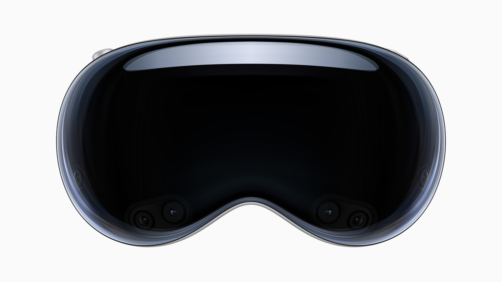 Apple Vision ProApple spent last segment of the day one conversations uncovering the numerous specs the product has. It seems that Apple went all out with making the headset look as luxurious as possible. It definetely was clear that they would be targeting the luxury and early adopter market as the price was $3500. This approach is extremely different from the approach their competitor Meta has taken. It is fitting for Apple as they seem to think that before making something that everyone can afford, they should make something that everyone wants.
Product Specifications
As previously mentioned, the Apple Vision Pro has yet to be released, so I am fully reliant on information that Apple has released in their keynote speech, and the experiences of those that have interacted with the headset. I will attempt to provide the information that I obtained and specify if it is speculative or not.
Dimensions and Weight
- General Headset From what I was able to gather online, the headset is speculated to have a weight of around 454 grams. For the purpose of this project, this is the weight I will be using. Gathering the details regarding the dimension of the headset proved to be a little challenging. With there being no definitive details about it, I resulted to using the AR file that apple provides on their site discussing the product. From what I gathered, the headset has a height of ~90mm, a width of ~160mm, and a total depth of ~250mm from the front of the housing to the back of the headband. The front glass and aluminum housing is ~40mm, and with the light blocker attached, it is ~90mm. For the properties revolving the components in the headset, I will be relying off of my ability to compare the product to other existing Apple products based off of its appearance and use case as a wearable.
- Front Housing
- Glass Front Panel For the front glass panel, I am presuming that the glass has similar properties to that of the Apple watch. In the keynote, it is said to be a laminated glass which may add some more structural integrity. However, for the sake of this project, I will be assuming it has the properties of an Apple watch that I will be using when doing further analysis.
- Aluminum Frame The aluminum frame sits behind the laminated glass and serves as a key structural component that houses all of the internal components. With this being a wearable, I suspect that the Apple Engineers who designed this would have aimed to make this as light as possible. For that reason, I am suspecting that this aluminum frame has the same properties as their notable Airpods Max headphones who utilize a aluminum to form the housing of the headset.
- Headphone and Chargine Band The headphone and charging band are connected to to the side of the aluminum frame and feed power and receive audio from the headsets internals. When I first saw these components, I immediately compared them to the existing Apple Watch sports band. This sports band is made of a durable silicone. These are the properties I will be using for the project.
- Light Blocker The light blocker will be one portion along with the headband that will be in constant contact with the user. For that reason, I suspect Apple designed this product with breathability and maleability in mind as it should keep the user fresh during extended use and fit ther user extremely well to prevent light from slipping in. This maleable fit and breathability is something I suspect the Apple Airpods Max cushions have for the best audio experience.
- Headband The headband is the other component that will be in constant contact with the user. This part was described to be designed with breathability and flexibility in mind. From the looks of it, I am comparing it to the trail band of the apple watch which provides sufficient flexibility, durability, and comfort.
- Power & Cables
- Battery To power this headset, Apple has landed on a external battery apporach that aimed to reduce the weight the user would be forced to have on top of their head. In doing so, it will allow the user to wear it for longer durations. From what I could gather, the battery has enough power to sustain the headset for 2 hours and is suspected to be ~2,000 mAh. It is also suspected to weigh between 200-300 grams and will be settling for 250 grams for this project. The dimensions of the battery pack are also unclear, but have estimated them to be 65mm x 150mm x 25mm for this project.
- Power Tether The power tether will be used to connect the headset to the external battery pack. It seeems to be made as Apples woven cables which are being seen in as the chargers of recent Apple products. I have estimated its length to be ~ 630mm.
- USB-C Power Adapter The USB-C power adapter that I will be using will be the one that comes standard with all new iPads.
- USB-C The USB-C power cable will be the one that comes standard with all new iPads which is at a length of 1m.
The Apple Way
I have spent a good portion of my day watchinga ton of unboxing experiences for Apple products. From what I can tell, and the reason for doing this project, they are phenomenal and extremely well thought out. Every detail seemed to be considered. Below are the several features that most Apple products have that I will aim to cover.
Product Protection
I have never opened a Apple package to uncover a damaged product. It should be able to withstand potential impacts, shocks, or vibrations that can occur during shipping.
Simplicity
In the products that Apple have, the products and packaging have an emphasis on simplicity. They are minimalistic, clean, and really easy to understand. The unboxing experience is straightforward without clutter or complicated opening mechanisms.
The Shell
If you have every unboxed an Apple product, you can probably picture the snow white box covered in a sleek plastic wrap or having the little tab on the underside that allows for the top cover to be removed.
Fit and Function
My favorite part of opening an apple product is the when I remove the lid of the product packaging. It seems that Apple has designed packages such that they remove with a phenomenal feel and audio response that can only be possible with the tolerances that the package has within itself.
These tolerances are present throughout all aspects of the unboxing experience. From that initial cover removal, to the package being lifted from its perfectly designed slot, these tolerances are designed to be extremely precise to create a great feel, but also keep the product in a stable position from the factory to the user.
Sustainability
This has been more present in the most recent years as Apple is aiming to be 100% carbon neutral for its supply chain and products by 2030.
With that being said, the materials used should be recyclable and aim to reduce excess packaging.
Branding
If you were to look at a shelf at Best Buy, you can always tell which products belong to Apple. This is due to their profound brand identity. With the package I design, I need to stick to their standards so that it is visually appealing, sleek, and elegant.
Competitors
With this product, Apple has ventured into a market that has been owned by a variety of other companies. The main being Meta and Oculus (who now belongs to Meta).
Below is a image of the unboxing of the Meta Quest 2. To get to the stage that is seen, the user removes a sliding cover which then allows the user to open the box. Although this layout of the Meta Quest 2 makes sense, I am not a fan of how cluttered that middle section is. In that section there is a attachment for users with glasses, documentation, and the and other cardstock like components that attach to the headset to keep it secure.
 Meta Quest 2 Unboxing
Meta Quest 2 Unboxing
Having seen this unboxing experience, and not being a true fan of its aesthetics, I am pretty sure that I want to orient the front of the headset to the user so that it has a cleaner look to it and is more engaging with the user.
Day One Reflections
After spending the day researching the Apple Vision Pro, Apple unboxing experiences, and Apple's competitors, I feel that I have a good idea of the approach that I want to take for creating the packaging for the Apple Vision Pro. I am sure that I will be getting a further understanding of the headset. I am excited to see what I will come up with.
Day Two
Day Two Timeline
Brainstorming/Concept Development
- Opening Outer Shell
- Inner Layer One
- Inner Layer Two
- Product Shell Design
Opening Outer Shell
The outer shell of this package is one of the most important sections. The reason is that it is the first part that the user sees. It is the segment that initially catches the attention of the user.
In brainstorming the various different layouts of how this shell might look like, I took inspiration from various apple products. The main components that I figured that I should capture are the product being highlighted on the top face of the shell, the name of the product being placed on the front and back side, and the apple logo on the right and left side.
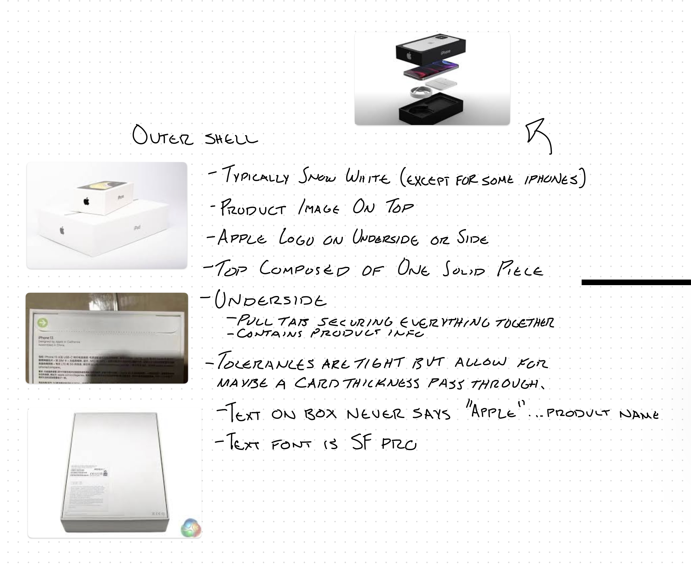 IdeationWith this in mind, I went into deciding which view would be most appealing and display the product in a manner I found suitable. After looking at the various arrangements, I landed with the laminated glass being the face of the product as it is on the landing page of the product. However, I thought that it would be nice to show the product with the screen on as most Apple products that have a display have it illuminated on the package face. Unfortunately, I was unable to get an image that I thought would be a good fit.
As for the other faces of the shell, I landed on using a normal black apple logo, along with 'Vision Pro' in the SF Pro font.
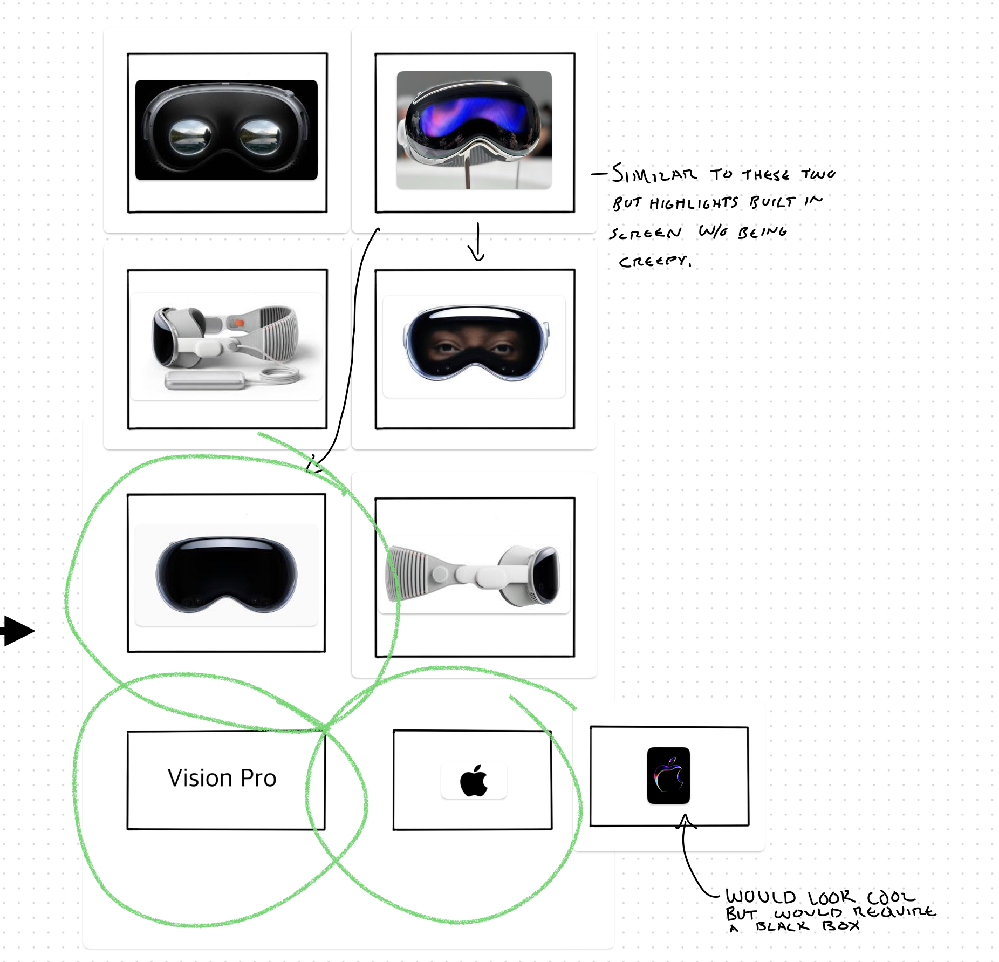 Outer Shell Concept SelectionInitial Layers
The opening layer is the first layer that the user sees once that they remove the oh so satisying frictioned outer shell.
For this layer, I contemplated what I would want the user to see. The two different methods I landed on was a documentation packet that is included in all Apple products, or the user viewing the product.
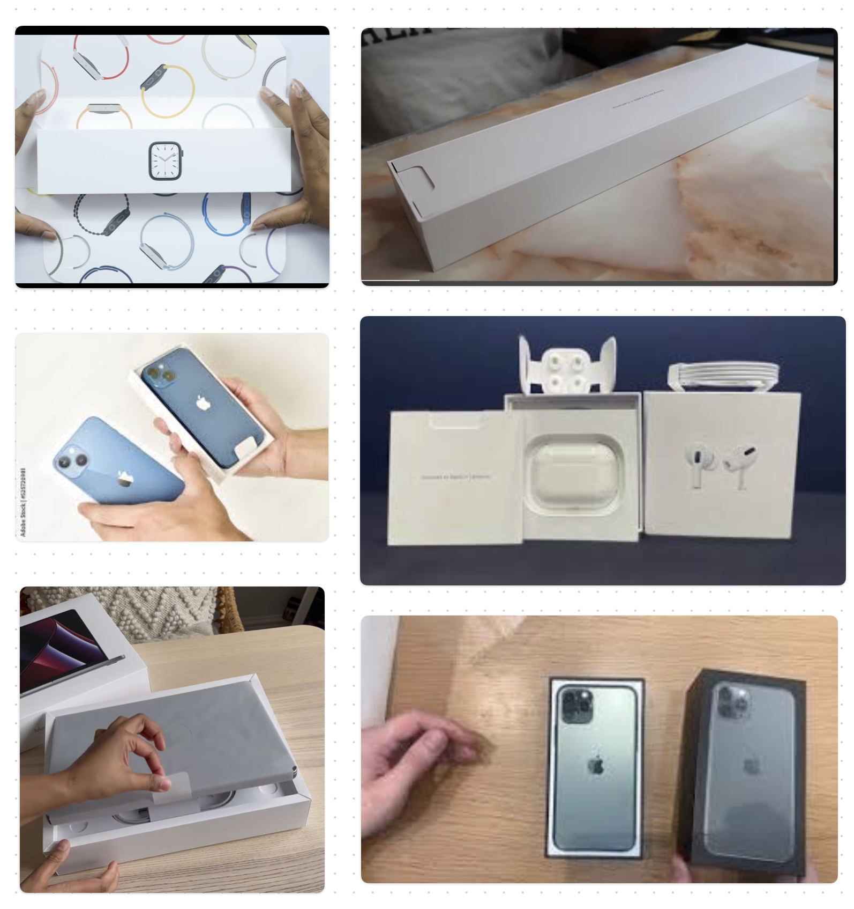 Package InspirationAs I brainstormed, I ended up deciding how I would want the headset revealed to the user. In doing so, I determined that with that orientation, it would be best to have a 'protectant' layer above it to prevent any damage to the laminated glass. This resulted in the decision of having the documentation packet placed above the headset and be the first layer of the package.
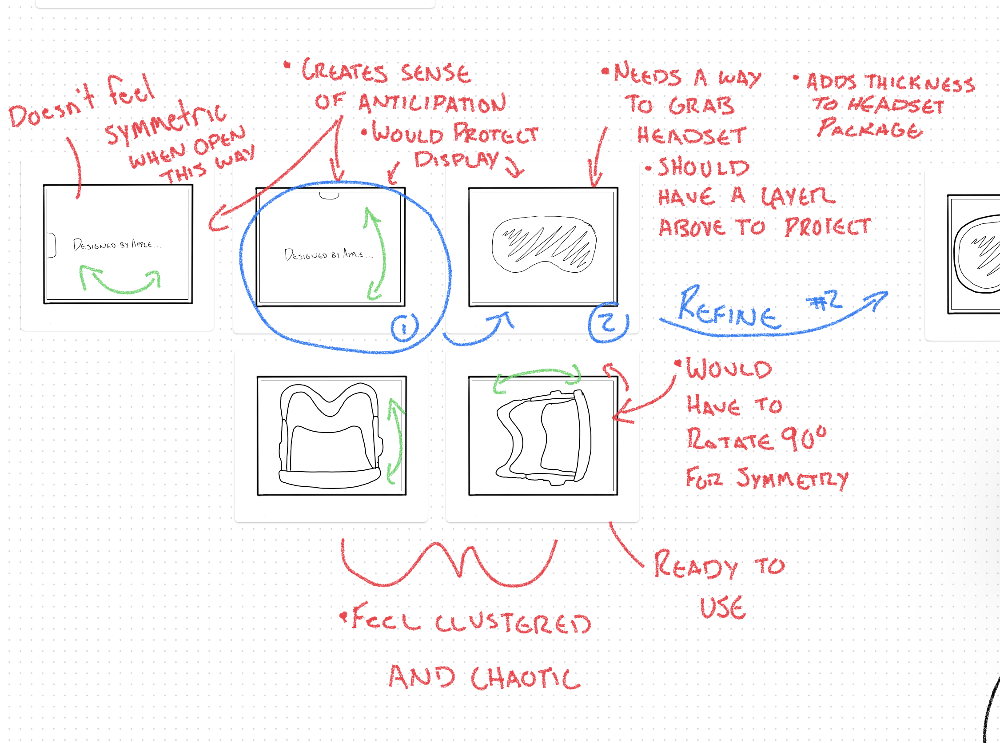 Layer One and Two SelectionWith this selection, I was able to then begin visualize the next layer which would show the headset itself. Ultimatelym, I decided that the headset would be held in a shell that resembled that of the airpods packaging.
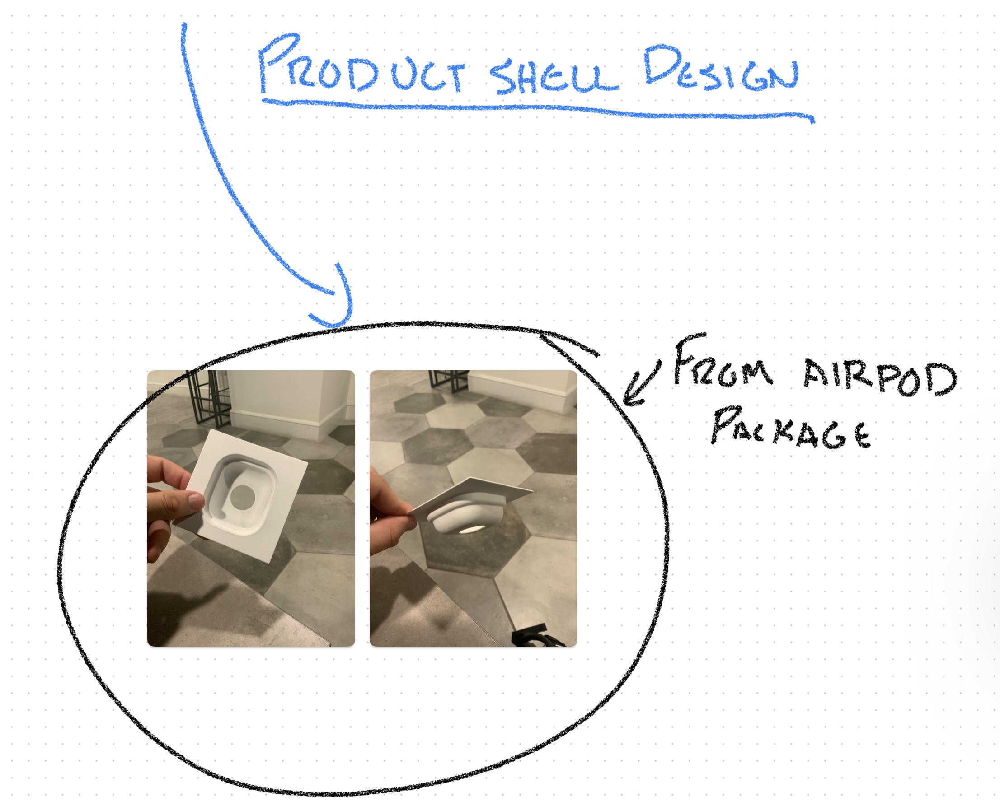 Airpod ShellThis shell holds the product well and provides the user with an area surrounding the proudct for a more seamless removal as they are able to place their fingers there. However, to make this work, I had to establish a pretty key assumption. This assumption is that the audio and charging bands are removable and are expected to be connected by the user as seen with the Apple watch products. This assumption is possible as within the WWDC keynote, there are several frames where the product is displayed without those bands.
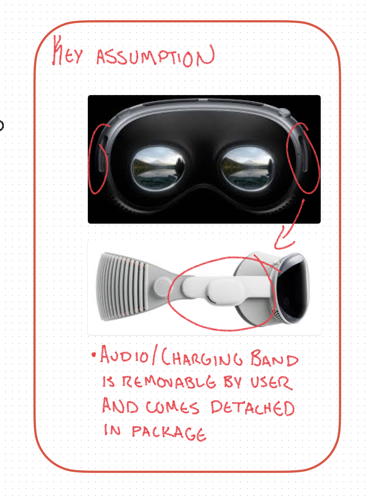 Audio Band AssumptionAside from assisting in the packaging sense, this assumption also allows apple to easily have boxes with different colored bands to appeal to those with different styles and such.
With this assumption, the product shell was ultimately decided to hold both the main device itself as well as the light blocker. This would allow the light blocker to be easily swapped out at the Apple store if needed as it is suspected that Apple will provide various options for the optimal fit to the user.
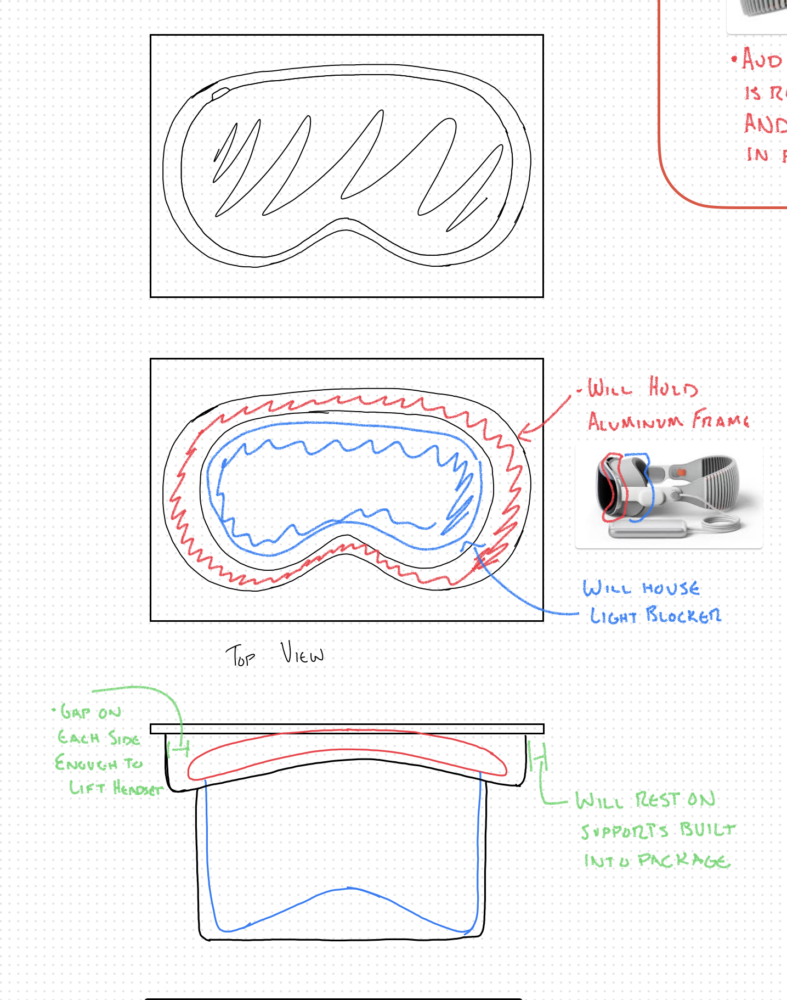 Shell DesignDay Two Reflections
Today gave me a greater look into the details that Apple packaging holds. I was able to determine what the general design of the outer shell and the first two layers that the user would see would look like. I only have a few concerns in the designs I made. Particularly in the shell that is holding the headset itself. The concern is in how the user would be expected to remove this shell to expose the next layer that I am anticipating will hold the remaining accessories. I will tackle this problem once I have a greater idea of how the accessories could be laid out based on their dimensions.
Day Three
Day Three Timeline
Brainstorming/Concept Development
- Inner Layer Three
- Layer Two & Layer Three Interaction
Inner Layer Three
The third layer is what the user will be exposed to when they remove the shell that holds the headset itself. This layer should hold all of the accessories that will allow the headset to function. These accessories include an external battery, the power tether, the headband, the audio/charging bands, a 30W power adapter, and a 1 meter long USB-C cable.
For this layer, I took to viewing how Apple typically packages their accessories. What I found is that they are usually laid out in some symmetrical format that is in line with the users perspective when opening. Each accessory that is also wrapped in some fashion. For example, the wires tend to have a cardstock like paper rap that keeps them neatly wound. Other accessories would be covered in a foggy plastic wrap that was easily removable. For some other accessories like the bands in the apple watch packaging, they would be put within a box packaging that resembled the box that would hold the documentation of the product.
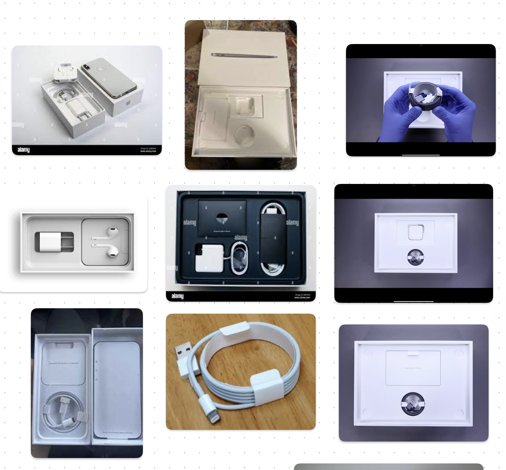 Accessory InspirationWith that being said, I chose to wrap the wires and power adapter that would be in this layer as they have typically been done in other packages. As for the headband and the audio/charging bands, I chose to package them within a seperate boxes. The reason for the decision is that I suspect Apple selling various headbands and audio/charging bands. Having the seperate boxes would make the swapping of the styles much easier for those that are assembling the packages. Also, having them in their own self contained boxes would allow for the layer to be more aesthetically appealing and designed with symmetry in mind.
With these design decisions made, I was then able to create rough sketches that would allow me to better visualize the layout.
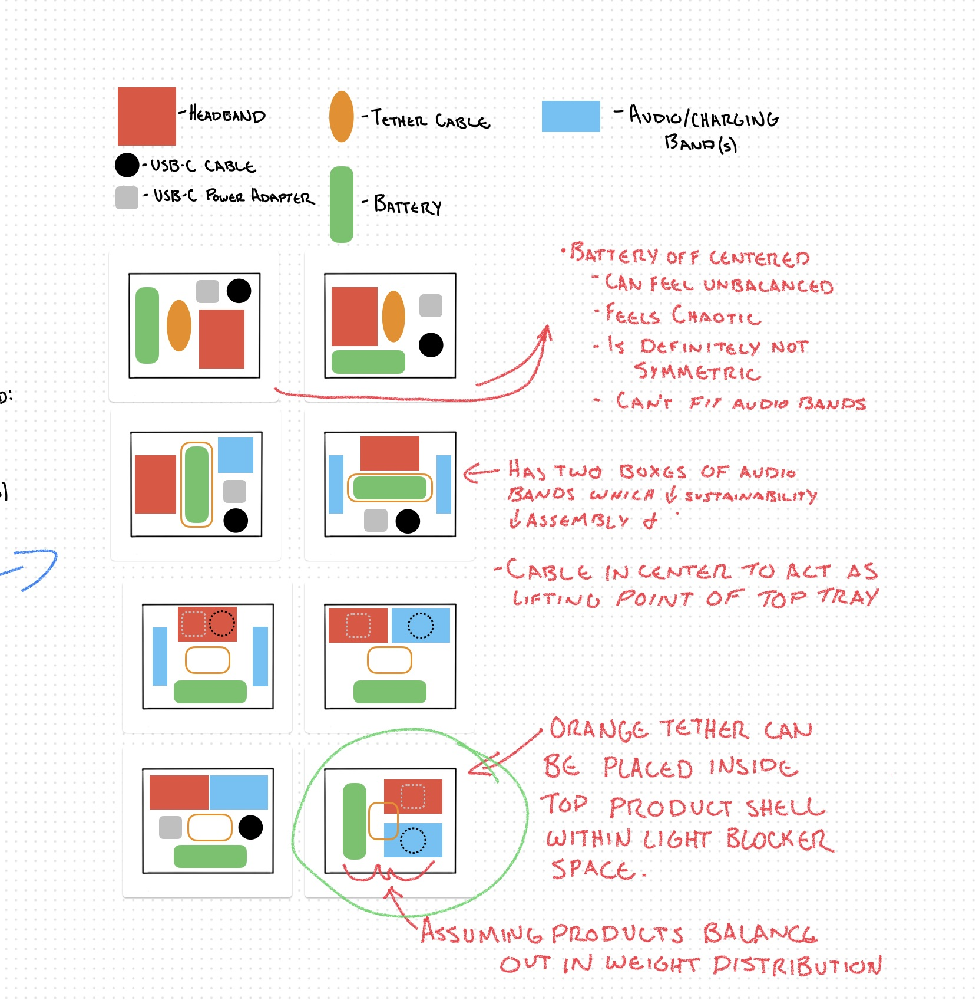 Accessory LayoutUltimately I felt most comfortable with the option that is circled. This option ensured that the Apple logo on the battery remained upright, and felt the most symmetrical. This layout also allowed for the best interaction between the second and third layer as the tether would be placed within the light blocker portion of the second layer. The tether cable will have a wrap on it such that it is exposed upon removing the product from the second layer to allow the user to lift the tether and thus the second layer from the package to expose the third layer.
Although I am satisfied with this positioning, I will be making the final decision in the coming days as I beign modeling the package as it will give me a better idea of the dimensions of each product and how they fit within the space I decide.
Day Three Reflections
With the ideation I was able to complete today with respect to the third layer, I am much less concerned with the issues that may arise with how the user would go about interacting with the package. I am now only concerned with how I could best utilize the space to ensure that it is optimized for minimal waste while still being aesthetically appealing to the user. In the coming days, I will begin modeling the packaging to fit the headset and the accessories while keeping manufacturing and assembling in mind.
Day Four
Day Four Timeline
Concept Refinement
- Refined Sketches & Discussions
Outer Shell
Unfortunately, I was not able to dedicate too much time to the project today and was only able to refine sketches of what I thought the packaging would look like.
Beginning with the outer shell. The outer shell would be the first part that the user would experience in unboxing the headset. I chose to resemble other apple packagings. This shell did so by having the product at the top face, the apple logos to each side, and the product name in the front and back faces.
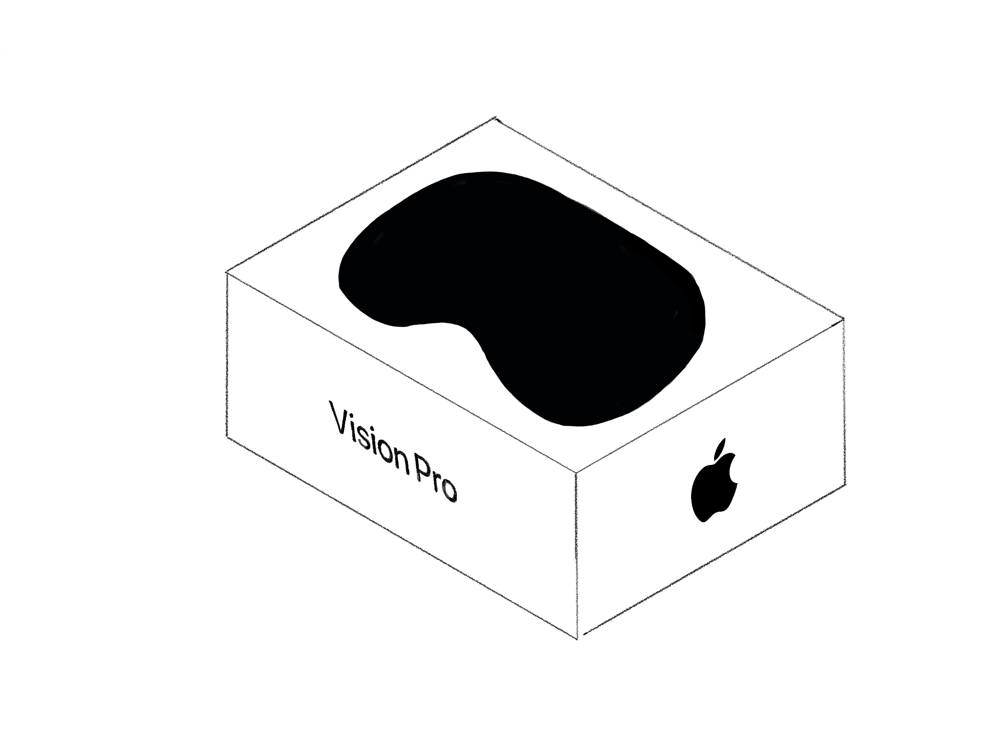 Outer Shell SketchDocumentation
The next view of the unboxing experience is the documentation packet. This packet will display 'Designed by Apple in California'. This packet would be able to hold all of the legal and informational content for the product as well as serve as a protection layer for the headset itself.
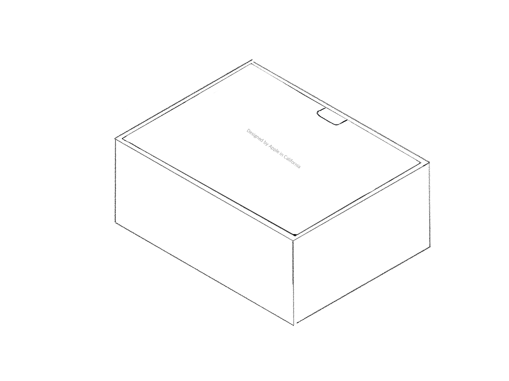 DocumentationVision Pro
This third layer is the main layer of the product as it will be the first viewing of the product to the user. I chose to orient the product this way as it is simple as seen in other Apple packages.
This product is embedded within a shell and has a rim surrounding it that is large enough to put fingers around the edge and lift up the headset from it.
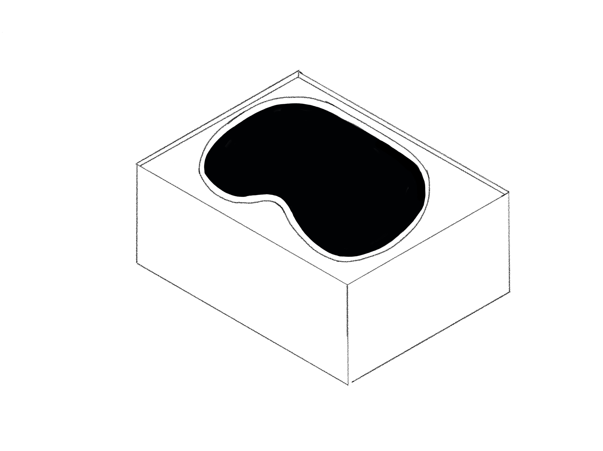 Vision Pro ViewVision Pro Shell
The shell that is holding the headset is a vital component to the seperation of the packaging. Ultimately, the decision was made to have the tether cable embedded in the middle where there is space within the light blocker. This adds structural integirty as well as makes it the point in which the user can lift the shell to expose the next layer.
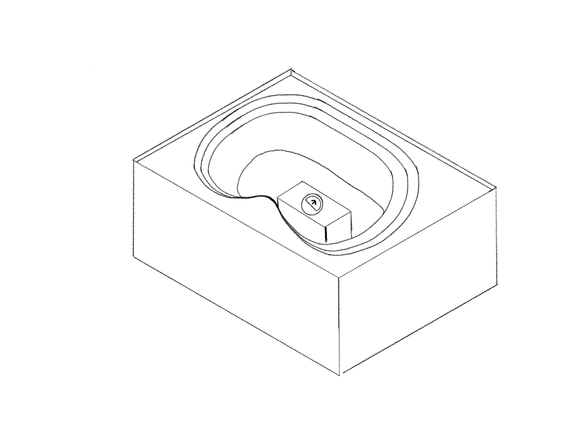 Vision Pro ShellAccessory Shell
The accessory shell is what will hold the battery pack, headband, audio/charging bands, 30 W power adapter, and a USB-C cable. This shell aims to be simmple by placing the cable and power adapter underneath the packaging of the bands and headband.
Underneath this shell, I aim to design a carboard cut that will act as a structural support for the shell and the above components.
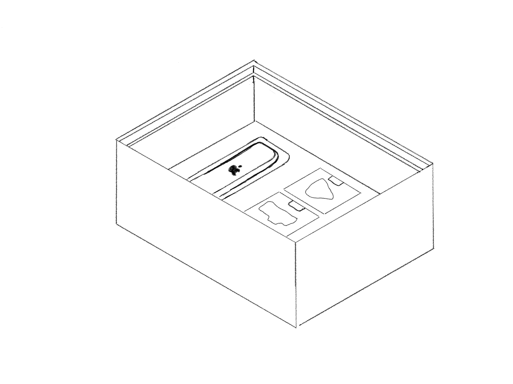 Accessory LayoutDay Four Reflections
This day of creating more refined sketches has allowed me to better allow me to visualize how I will begin modeling the system. I am concerned with the dimensioning of the system as I do not have truly defined definitions with the headset being unreleased. As I obtain a model of the actual headset and its various components, these sketches will help me tremendously to aligns the systems.
Day Five
Day Five Timeline
Modeling
- Obtain Model
- Model Breakdown
- Model Dimensioning
Day Six
Day Six Timeline
Modeling and Manufacturing
- Obtain Model
- Model Breakdown
- Model Dimensioning
Day Seven
Day Six Timeline
Finishing Touches
- Animation
- Documentation